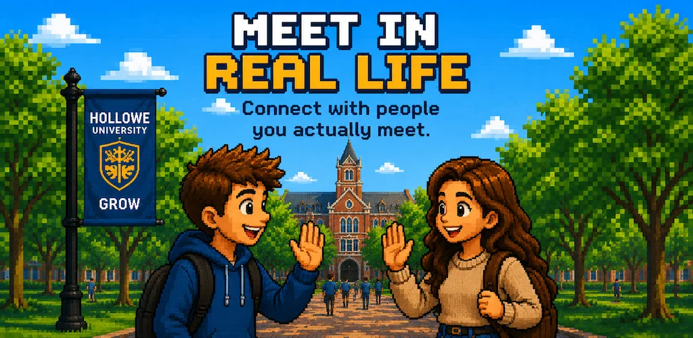
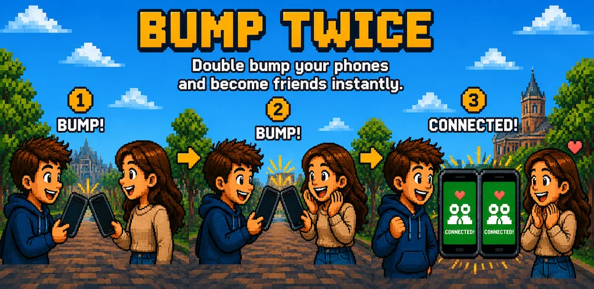
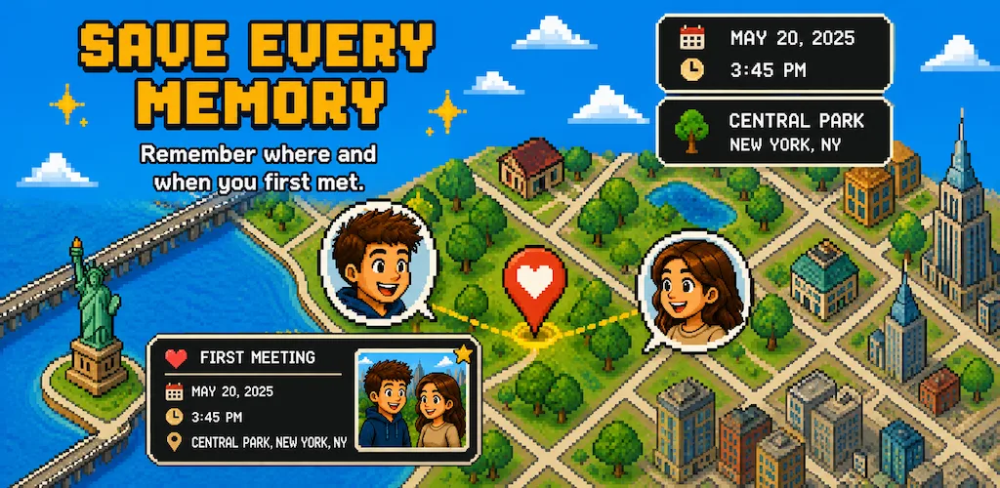
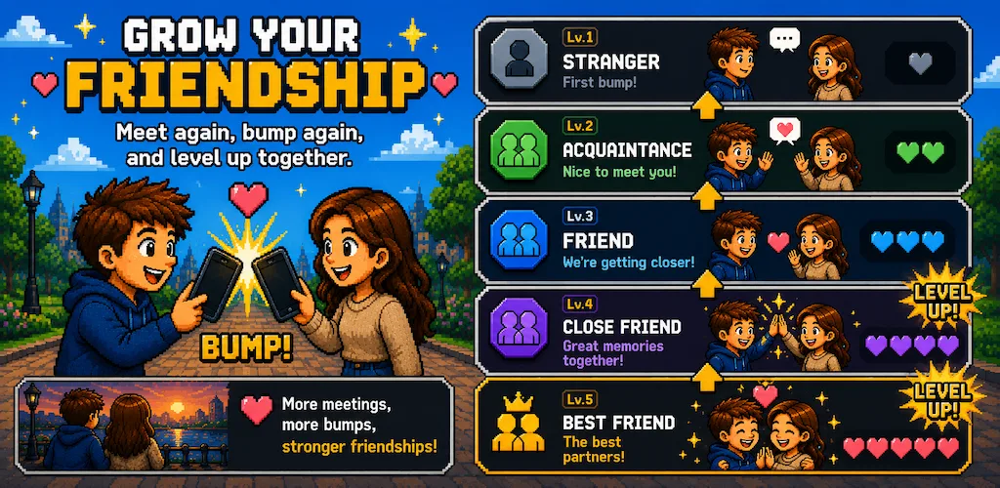
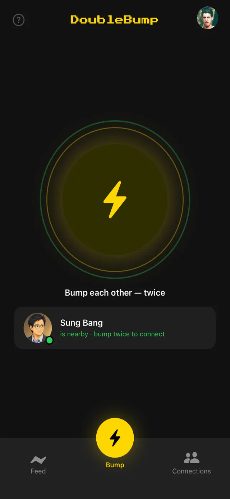
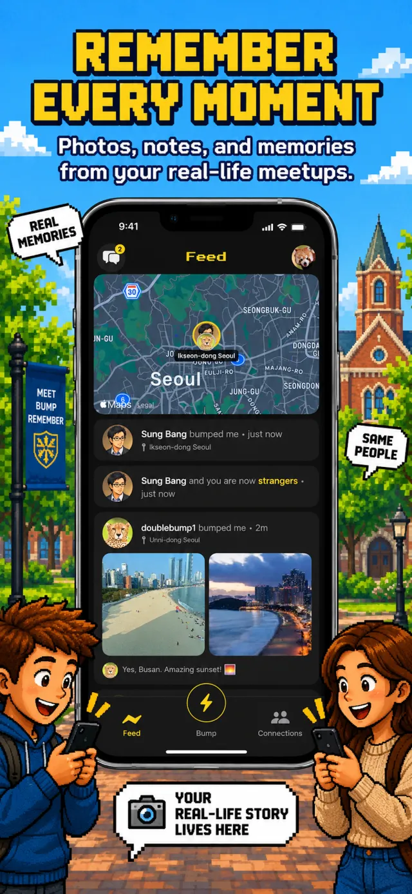
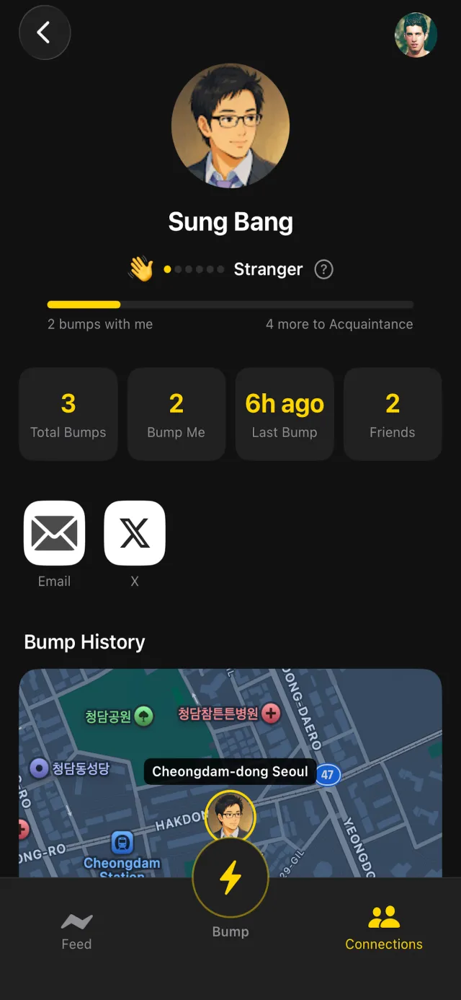
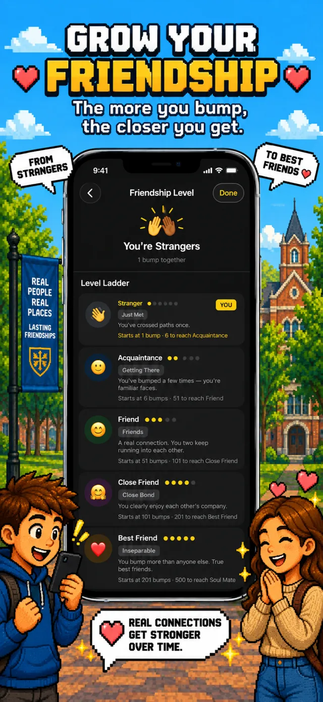
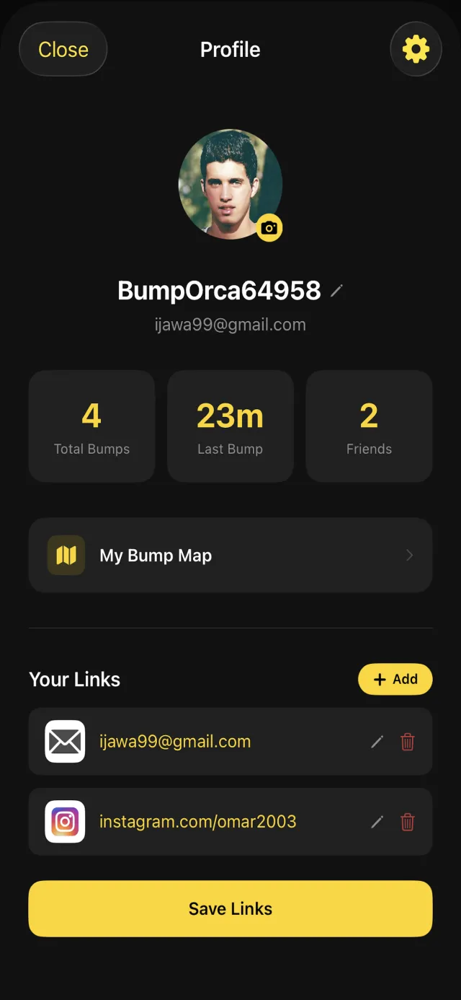
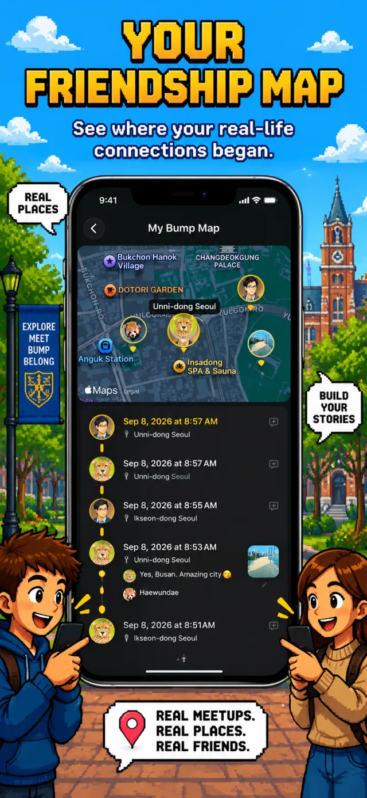

DOUBLE
BUMP
Meet. Bump. Remember.
Connect with people you actually meet — just bump phones twice. No QR codes. No usernames. Just a physical moment.
Three steps.
One real connection.
See DoubleBump in action.




Your real-world social map.
Every bump builds a permanent memory. See your connections, where you met, and every moment you've shared.
A closer look inside.






Three layers. No spoofing.
A connection can only happen if all three layers pass simultaneously.
Frequently asked questions
How does DoubleBump work?
Both users open DoubleBump and tap their phones together twice. Bluetooth Low Energy confirms you're within 30 cm. Motion sensors verify both devices felt the same physical impact within 400 ms. The double-tap confirms mutual intent. All three checks must pass simultaneously — accidental bumps and remote spoofing are both impossible.
Does DoubleBump work between iPhone and Android?
Yes. The cross-platform BLE protocol is live — iPhone and Android users can bump with each other. DoubleBump uses Bluetooth Manufacturer Data to detect cross-platform devices reliably.
What happens after I bump someone?
Both screens glow yellow and you feel a haptic response. The connection is permanently saved on your Memory Map with the location where you met. You can add a photo and a 100-character note (Encounter Memory) to capture the moment. No feed, no algorithm — just your private map.
What are relationship levels?
Six levels unlock as you keep bumping the same person: Stranger → Acquaintance → Friend → Close Friend → Best Friend → Soul Mate. Levels persist forever and keep building with every bump.
Can someone fake a DoubleBump connection remotely?
No. Remote spoofing is physically impossible. BLE proximity requires being within 30 cm. The motion signature must match within 400 ms of a real physical collision. Without actually being there and physically tapping phones, none of the three layers can pass.
Is DoubleBump free?
Yes. DoubleBump is free on iOS and Android. Locked profile details of non-connected users can be unlocked by watching a short rewarded ad.
Ready to bump?
Free on iOS and Android.